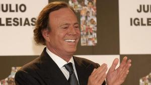

Las Mamarazzis han empezado el pódcast de este miércoles felicitando a todas las mujeres para celebrar el 8-M y preparándose para no faltar luego a la manifestación. Ha sido antes de entrar en la materia del día, con esa portada de la revista ‘¡Hola!’ luciendo entrevista con un Julio Iglesias defendiendo y dando la cara por Isabel Preysler.
Dice textualmente el cantante que Preysler "es excepcional, una campeona de verdad. Como madre es ejemplar, cariñosa y generosa; y como mujer, un diez". Laura Fa y Lorena Vázquez han destacado la foto de la portada de un sonriente Julio Iglesias remarcando que es de 1983, preguntándose cómo debe estar ahora el músico, que en las entrevistas siempre muestra su perfil bueno, el derecho.
